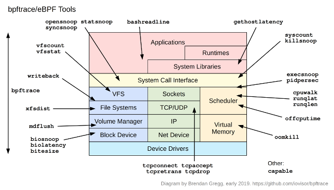
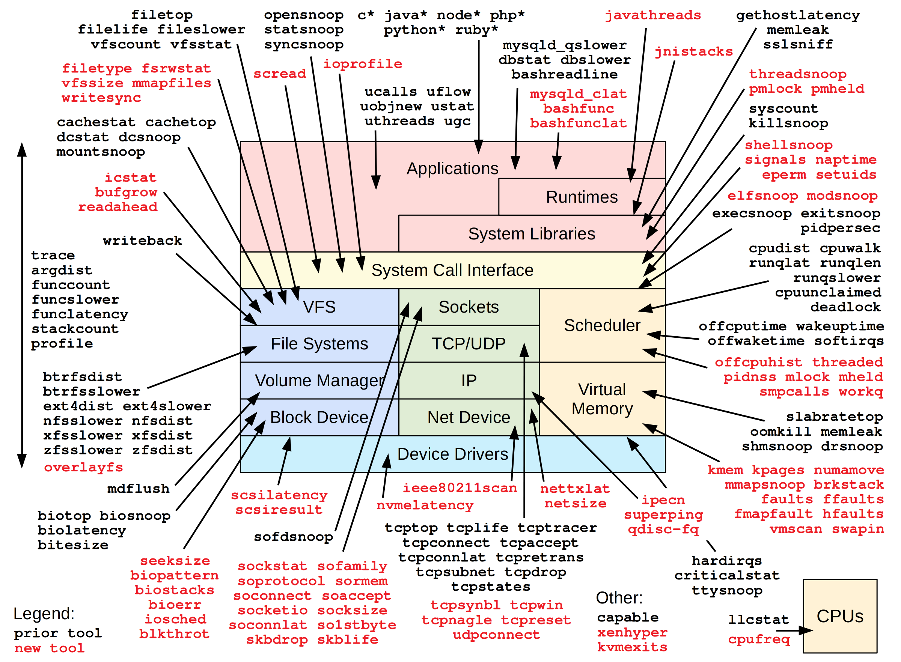
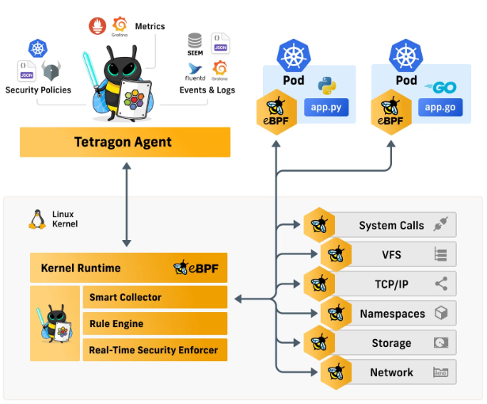

🥈 BGP on Cilium A Kubernetes and Cilium hands-on lab by Isovalent
🌐 BGP is a Data Center Standard
BGP is not just the foundational protocol behind the Internet; it is now the standard within data centers.
Modern data center network fabrics are typically based on a “leaf-and-spine” architecture where BGP is typically used to propagate endpoint reachability information.
Given that such endpoints can be Kubernetes Pods, it was natural that Cilium should introduce support for BGP.
In this lab, you will be deploying BGP with Cilium and peer with a virtual leaf/spine data center network. By the end of the lab, you will see how easy it is to connect your data center network with your Cilium-managed Kubernetes clusters!
⬢ BGP Support in Cilium
BGP support was initially introduced in Cilium 1.10 and subsequent improvements have been made since, such as the recent introduction of IPv6 support in Cilium 1.12.
The following video shows an introduction and a demo of the new BGP features in Cilium 1.12.
Get a Badge! By completing this lab, you will be able to earn a badge.
Make sure to finish the lab in order to get your badge!
Progress Tracking Hello Alan and welcome to this Isovalent hands-on lab!
We know labs like this one can be long, and you’re a busy person, so you might not be able to finish it in one go.
Don’t worry though! We’re tracking your progress through the lab, so if at any point you need to stop the lab and restart it later (or the session times out), you’ll have an option to restore your progress.
Enjoy!
🏛 The Kind Cluster
We are going to be using Kind to set up our Kubernetes cluster, and on top of that Cilium.
Let’s have a look at its configuration:
yq cluster.yaml
root@server:~# yq cluster.yaml
kind: Cluster
name: clab-bgp-cplane-demo
apiVersion: kind.x-k8s.io/v1alpha4
networking:
disableDefaultCNI: true
podSubnet: "10.1.0.0/16"
nodes:
- role: control-plane
kubeadmConfigPatches:
- |
kind: InitConfiguration
nodeRegistration:
kubeletExtraArgs:
node-ip: "10.0.1.2"
node-labels: "rack=rack0"
- role: worker
kubeadmConfigPatches:
- |
kind: JoinConfiguration
nodeRegistration:
kubeletExtraArgs:
node-ip: "10.0.2.2"
node-labels: "rack=rack0"
- role: worker
kubeadmConfigPatches:
- |
kind: JoinConfiguration
nodeRegistration:
kubeletExtraArgs:
node-ip: "10.0.3.2"
node-labels: "rack=rack1"
- role: worker
kubeadmConfigPatches:
- |
kind: JoinConfiguration
nodeRegistration:
kubeletExtraArgs:
node-ip: "10.0.4.2"
node-labels: "rack=rack1"
containerdConfigPatches:
- |-
[plugins."io.containerd.grpc.v1.cri".registry.mirrors."localhost:5000"]
endpoint = ["http://kind-registry:5000"]🖥 Nodes
In the nodes section, you can see that the cluster consists of four nodes:
1 control-plane node running the Kubernetes control plane and etcd 3 worker nodes to deploy the applications
🔀 Networking
In the networking section of the configuration file, the default CNI has been disabled so the cluster won’t have any Pod network when it starts. Instead, Cilium will be deployed to the cluster to provide this functionality.
To see if the Kind cluster is installed, verify that the nodes are up and joined:
kubectl get nodes
You should see the four nodes appear, all marked as NotReady. This is normal, since the CNI is disabled, and we will install Cilium later on in this lab. If you don’t see all nodes, the workers nodes might still be joining the cluster. Relaunch the command until you can see all four nodes listed.
Before we install Cilium on it, we will be using a platform called containerlab to simulate the networking backbone Cilium will peer with.
In this lab, containerlab is also responsible for assigning internal IP to the Kubernetes nodes. Notice that, if you run the following command, no IP addresses has been allocated to the nodes yet:
kubectl get nodes -o wide
That’s OK, we will be deploying containerlab in the next task.
💻 Networking Fabric
To showcase the Cilium BGP feature, we need a BGP-capable device to peer with.
For this purpose, we will be leveraging Containerlab and FRR (Free Range Routing). These great tools provide the ability to simulate networking environment in containers.
🧪 Containerlab
Containerlab is a platform that enables users to deploy virtual networking topologies, based on containers and virtual machines. One of the virtual routing appliances that can be deployed via Containerlab is FRR - a feature-rich open-source networking platform.
By the end of the lab, you will have established BGP peering with the FRR virtual devices.

🔍 Inspect the network topology (Optional) If you’re curious, you can check out in details the containerlab topology we are deploying as part of the lab.
yq topo.yaml
name: bgp-cplane-demo
topology:
kinds:
linux:
cmd: bash
nodes:
router0:
kind: linux
image: frrouting/frr:v8.2.2
labels:
app: frr
exec:
# NAT everything in here to go outside of the lab
- iptables -t nat -A POSTROUTING -o eth0 -j MASQUERADE
# Loopback IP (IP address of the router itself)
- ip addr add 10.0.0.0/32 dev lo
# Terminate rest of the 10.0.0.0/8 in here
- ip route add blackhole 10.0.0.0/8
# Boiler plate to make FRR work
- touch /etc/frr/vtysh.conf
- sed -i -e 's/bgpd=no/bgpd=yes/g' /etc/frr/daemons
- /usr/lib/frr/frrinit.sh start
# FRR configuration
- >-
vtysh -c 'conf t' -c 'frr defaults datacenter' -c 'router bgp 65000' -c ' bgp router-id 10.0.0.0' -c ' no bgp ebgp-requires-policy' -c ' neighbor ROUTERS peer-group' -c ' neighbor ROUTERS remote-as external' -c ' neighbor ROUTERS default-originate' -c ' neighbor net0 interface peer-group ROUTERS' -c ' neighbor net1 interface peer-group ROUTERS' -c ' address-family ipv4 unicast' -c ' redistribute connected' -c ' exit-address-family' -c '!'
tor0:
kind: linux
image: frrouting/frr:v8.2.2
labels:
app: frr
exec:
- ip link del eth0
- ip addr add 10.0.0.1/32 dev lo
- ip addr add 10.0.1.1/24 dev net1
- ip addr add 10.0.2.1/24 dev net2
- touch /etc/frr/vtysh.conf
- sed -i -e 's/bgpd=no/bgpd=yes/g' /etc/frr/daemons
- /usr/lib/frr/frrinit.sh start
- >-
vtysh -c 'conf t' -c 'frr defaults datacenter' -c 'router bgp 65010' -c ' bgp router-id 10.0.0.1' -c ' no bgp ebgp-requires-policy' -c ' neighbor ROUTERS peer-group' -c ' neighbor ROUTERS remote-as external' -c ' neighbor SERVERS peer-group' -c ' neighbor SERVERS remote-as internal' -c ' neighbor net0 interface peer-group ROUTERS' -c ' neighbor 10.0.1.2 peer-group SERVERS' -c ' neighbor 10.0.2.2 peer-group SERVERS' -c ' address-family ipv4 unicast' -c ' redistribute connected' -c ' exit-address-family' -c '!'
tor1:
kind: linux
image: frrouting/frr:v8.2.2
labels:
app: frr
exec:
- ip link del eth0
- ip addr add 10.0.0.2/32 dev lo
- ip addr add 10.0.3.1/24 dev net1
- ip addr add 10.0.4.1/24 dev net2
- touch /etc/frr/vtysh.conf
- sed -i -e 's/bgpd=no/bgpd=yes/g' /etc/frr/daemons
- /usr/lib/frr/frrinit.sh start
- >-
vtysh -c 'conf t' -c 'frr defaults datacenter' -c 'router bgp 65011' -c ' bgp router-id 10.0.0.2' -c ' bgp bestpath as-path multipath-relax' -c ' no bgp ebgp-requires-policy' -c ' neighbor ROUTERS peer-group' -c ' neighbor ROUTERS remote-as external' -c ' neighbor SERVERS peer-group' -c ' neighbor SERVERS remote-as internal' -c ' neighbor net0 interface peer-group ROUTERS' -c ' neighbor 10.0.3.2 peer-group SERVERS' -c ' neighbor 10.0.4.2 peer-group SERVERS' -c ' address-family ipv4 unicast' -c ' redistribute connected' -c ' exit-address-family' -c '!'
srv-control-plane:
kind: linux
image: nicolaka/netshoot:latest
network-mode: container:control-plane
exec:
# Cilium currently doesn't support BGP Unnumbered
- ip addr add 10.0.1.2/24 dev net0
# Cilium currently doesn't support importing routes
- ip route replace default via 10.0.1.1
srv-worker:
kind: linux
image: nicolaka/netshoot:latest
network-mode: container:worker
exec:
- ip addr add 10.0.2.2/24 dev net0
- ip route replace default via 10.0.2.1
srv-worker2:
kind: linux
image: nicolaka/netshoot:latest
network-mode: container:worker2
exec:
- ip addr add 10.0.3.2/24 dev net0
- ip route replace default via 10.0.3.1
srv-worker3:
kind: linux
image: nicolaka/netshoot:latest
network-mode: container:worker3
exec:
- ip addr add 10.0.4.2/24 dev net0
- ip route replace default via 10.0.4.1
links:
- endpoints: ["router0:net0", "tor0:net0"]
- endpoints: ["router0:net1", "tor1:net0"]
- endpoints: ["tor0:net1", "srv-control-plane:net0"]
- endpoints: ["tor0:net2", "srv-worker:net0"]
- endpoints: ["tor1:net1", "srv-worker2:net0"]
- endpoints: ["tor1:net2", "srv-worker3:net0"]Go to the 🔗 🗺️ Network Topology tab to observe the architecture.
The main thing to notice is that we are deploying 3 main routing nodes: a backbone router (router0) and two Top of Rack (ToR) routers (tor0 and tor1). We are pre-configuring them at boot time with their IP and BGP configuration. At the end of the YAML file, you will also note we are establishing virtual links between the backbone and the ToR routers.
In the following tasks, we will configure Cilium to run BGP on the kind nodes and to establish BGP peering with the ToR devices.
Here is what the overall final topology looks like (note you can resize this window if the diagram is too small):

🚀 Deploy the networking topology
In the >_ Terminal, deploy the topology previously described:
containerlab -t topo.yaml deploy
This typically only takes a few seconds to deploy.
INFO[0000] Containerlab v0.31.1 started
INFO[0000] Parsing & checking topology file: topo.yaml
INFO[0000] Could not read docker config: open /root/.docker/config.json: no such file or directory
INFO[0000] Pulling docker.io/frrouting/frr:v8.2.2 Docker image
INFO[0004] Done pulling docker.io/frrouting/frr:v8.2.2
INFO[0004] Could not read docker config: open /root/.docker/config.json: no such file or directory
INFO[0004] Pulling docker.io/nicolaka/netshoot:latest Docker image
INFO[0016] Done pulling docker.io/nicolaka/netshoot:latest
INFO[0016] Creating lab directory: /root/clab-bgp-cplane-demo
INFO[0016] Creating docker network: Name="clab", IPv4Subnet="172.20.20.0/24", IPv6Subnet="2001:172:20:20::/64", MTU="1500"
INFO[0016] Creating container: "srv-worker"
INFO[0016] Creating container: "srv-control-plane"
INFO[0016] Creating container: "tor0"
INFO[0016] Creating container: "router0"
INFO[0016] Creating container: "tor1"
INFO[0016] Creating container: "srv-worker3"
INFO[0016] Creating container: "srv-worker2"
INFO[0019] Creating virtual wire: router0:net0 <--> tor0:net0
INFO[0019] Creating virtual wire: tor0:net1 <--> srv-control-plane:net0
INFO[0019] Creating virtual wire: tor0:net2 <--> srv-worker:net0
INFO[0019] Creating virtual wire: tor1:net1 <--> srv-worker2:net0
INFO[0019] Creating virtual wire: router0:net1 <--> tor1:net0
INFO[0019] Creating virtual wire: tor1:net2 <--> srv-worker3:net0
INFO[0019] Adding containerlab host entries to /etc/hosts file
INFO[0020] Executed command '/usr/lib/frr/frrinit.sh start' on clab-bgp-cplane-demo-tor1. stdout:
Started watchfrr
INFO[0021] Executed command '/usr/lib/frr/frrinit.sh start' on clab-bgp-cplane-demo-router0. stdout:
Started watchfrr
INFO[0022] Executed command '/usr/lib/frr/frrinit.sh start' on clab-bgp-cplane-demo-tor0. stdout:
Started watchfrr
INFO[0022] 🎉 New containerlab version 0.54.2 is available! Release notes: https://containerlab.dev/rn/0.54/#0542
Run 'containerlab version upgrade' to upgrade or go check other installation options at https://containerlab.dev/install/
+---+----------------------------------------+--------------+--------------------------+-------+---------+----------------+----------------------+
| # | Name | Container ID | Image | Kind | State | IPv4 Address | IPv6 Address |
+---+----------------------------------------+--------------+--------------------------+-------+---------+----------------+----------------------+
| 1 | clab-bgp-cplane-demo-router0 | 258f32563375 | frrouting/frr:v8.2.2 | linux | running | 172.20.20.2/24 | 2001:172:20:20::2/64 |
| 2 | clab-bgp-cplane-demo-srv-control-plane | 45d72191a144 | nicolaka/netshoot:latest | linux | running | N/A | N/A |
| 3 | clab-bgp-cplane-demo-srv-worker | 4fc966b2a876 | nicolaka/netshoot:latest | linux | running | N/A | N/A |
| 4 | clab-bgp-cplane-demo-srv-worker2 | 00ec5fe012ff | nicolaka/netshoot:latest | linux | running | N/A | N/A |
| 5 | clab-bgp-cplane-demo-srv-worker3 | 6c89b592b297 | nicolaka/netshoot:latest | linux | running | N/A | N/A |
| 6 | clab-bgp-cplane-demo-tor0 | f4680ddb95d3 | frrouting/frr:v8.2.2 | linux | running | 172.20.20.4/24 | 2001:172:20:20::4/64 |
| 7 | clab-bgp-cplane-demo-tor1 | ce203d83dd09 | frrouting/frr:v8.2.2 | linux | running | 172.20.20.3/24 | 2001:172:20:20::3/64 |
+---+----------------------------------------+--------------+--------------------------+-------+---------+----------------+----------------------+✅ Verify our connectivity
At this stage, BGP should be up between our Top of Rack switches and the backbone router router0.
Topology 
Let’s verify this with this command.
docker exec -it clab-bgp-cplane-demo-router0 vtysh -c 'show bgp ipv4 summary wide'
root@server:~# docker exec -it clab-bgp-cplane-demo-router0 vtysh -c 'show bgp ipv4 summary wide'
IPv4 Unicast Summary (VRF default):
BGP router identifier 10.0.0.0, local AS number 65000 vrf-id 0
BGP table version 8
RIB entries 15, using 2760 bytes of memory
Peers 2, using 1433 KiB of memory
Peer groups 1, using 64 bytes of memory
Neighbor V AS LocalAS MsgRcvd MsgSent TblVer InQ OutQ Up/Down State/PfxRcd PfxSnt Desc
tor0(net0) 4 65010 65000 28 28 0 0 0 00:00:57 3 9 N/A
tor1(net1) 4 65011 65000 28 28 0 0 0 00:00:57 3 9 N/A
Total number of neighbors 2Let’s explain briefly this command.
docker exec -it lets us enter the router0 shell. As mentioned earlier, router0 is based on the open-source Free Range Routing platform (FRR). vtysh is the integrated shell on FRR devices. show bgp ipv4 summary wide lets us check the BGP status. Once you run this command, you will an output such as:
IPv4 Unicast Summary (VRF default): BGP router identifier 10.0.0.0, local AS number 65000 vrf-id 0
Neighbor V AS LocalAS MsgRcvd MsgSent TblVer InQ OutQ Up/Down State/PfxRcd PfxSnt Desc tor0(net0) 4 65010 65000 42 41 0 0 0 00:01:42 3 9 N/A tor1(net1) 4 65011 65000 42 42 0 0 0 00:01:41 3 9 N/A
Total number of neighbors 2 If you’re familiar with using BGP on traditional CLIs such as Cisco IOS, this will look familiar. If not, let’s go through some of the key outputs of the command above.
This commands provides information about the BGP status on router0. It shows router0’s local AS number (65000), the remote AS number of the routers it is peering with (65010 for tor0 and 65011 for tor1).
It also shows, in the Up/Down column where the session is established (if that’s the case, it will show for how long the session has been up - in our case, it’s been up for 00:01:41).
Finally, it shows how many prefixes have been received and sent (see State/PfxRcd and PfxSnt).
Let’s run this command on the Top of Rack switches. Two of the sessions remain “Active” - it means the peering sessions are configured and actively trying to peer but they are not established yet.
It’s to be expected: BGP is not established with the Kind nodes as we haven’t deployed Cilium yet.
On tor0:
docker exec -it clab-bgp-cplane-demo-tor0 vtysh -c 'show bgp ipv4 summary wide'
root@server:~# docker exec -it clab-bgp-cplane-demo-tor0 vtysh -c 'show bgp ipv4 summary wide'
IPv4 Unicast Summary (VRF default):
BGP router identifier 10.0.0.1, local AS number 65010 vrf-id 0
BGP table version 9
RIB entries 15, using 2760 bytes of memory
Peers 3, using 2149 KiB of memory
Peer groups 2, using 128 bytes of memory
Neighbor V AS LocalAS MsgRcvd MsgSent TblVer InQ OutQ Up/Down State/PfxRcd PfxSnt Desc
router0(net0) 4 65000 65010 38 39 0 0 0 00:01:32 6 9 N/A
10.0.1.2 4 0 65010 0 0 0 0 0 never Active 0 N/A
10.0.2.2 4 0 65010 0 0 0 0 0 never Active 0 N/A
Total number of neighbors 3On tor1:
docker exec -it clab-bgp-cplane-demo-tor1 vtysh -c 'show bgp ipv4 summary wide'
root@server:~# docker exec -it clab-bgp-cplane-demo-tor1 vtysh -c 'show bgp ipv4 summary wide'
IPv4 Unicast Summary (VRF default):
BGP router identifier 10.0.0.2, local AS number 65011 vrf-id 0
BGP table version 9
RIB entries 15, using 2760 bytes of memory
Peers 3, using 2149 KiB of memory
Peer groups 2, using 128 bytes of memory
Neighbor V AS LocalAS MsgRcvd MsgSent TblVer InQ OutQ Up/Down State/PfxRcd PfxSnt Desc
router0(net0) 4 65000 65011 49 50 0 0 0 00:02:06 6 9 N/A
10.0.3.2 4 0 65011 0 0 0 0 0 never Active 0 N/A
10.0.4.2 4 0 65011 0 0 0 0 0 never Active 0 N/A
Total number of neighbors 3In the next step, we will be deploying Cilium on the nodes.
🖥️ The Cilium CLI
The cilium CLI tool can install and update Cilium on a cluster, as well as activate features —such as Hubble and Cluster Mesh.
❯ cilium install 🔮 Auto-detected Kubernetes kind: kind ✨ Running “kind” validation checks ✅ Detected kind version “0.20.0” ℹ️ Using Cilium version “v1.14.1” 🔮 Auto-detected cluster name: kind-kind 🔮 Auto-detected kube-proxy has been installed
⬢ The Cilium CLI
The cilium CLI tool is provided in this environment to install and check the status of Cilium in the cluster.
Let’s start by installing Cilium on the Kind cluster, with BGP enabled.
cilium install \
--version 1.15.0-rc.1 \
--set ipam.mode=kubernetes \
--set tunnel=disabled \
--set ipv4NativeRoutingCIDR="10.0.0.0/8" \
--set bgpControlPlane.enabled=true \
--set k8s.requireIPv4PodCIDR=trueThe installation usually takes a couple of minutes. While we wait for the installation to complete, let’s review some Cilium BGP aspects:
As you can see in the Cilium Helm values above, bgpControlPlane is the main requirement to enable BGP on Cilium. The configuration for BGP peers and Autonomous System Numbers (ASN) will be configured through a Kubernetes CRD (that’s the next task). For more details on the BGP configuration options, you can read up more on the official Cilium BGP documentation.
The installation should now have finished. Let’s verify the status of Cilium:
cilium status --wait
Cilium is now functional on our cluster.
Let’s verify that BGP has been successfully enabled by checking the Cilium configuration:
cilium config view | grep enable-bgp
Next, we are going to deploy our BGP Peering Policies and verify that the BGP sessions are established.
⚙️ Lab setup Our networking infrastructure is now ready: we can set up peering between our BGP peers and let them exchange routes.
Once BGP is up, we will complete the lab by verifying end-to-end connectivity across our virtual network.
⚒️ BGP Configuration Let’s first walk through the BGP Peering configuration.
Peering policies can be provisioned using simple Kubernetes CRDs, of the kind CiliumBGPPeeringPolicy.
yq cilium-bgp-peering-policies.yaml
root@server:~# yq cilium-bgp-peering-policies.yaml
---
apiVersion: "cilium.io/v2alpha1"
kind: CiliumBGPPeeringPolicy
metadata:
name: rack0
spec:
nodeSelector:
matchLabels:
rack: rack0
virtualRouters:
- localASN: 65010
exportPodCIDR: true
neighbors:
- peerAddress: "10.0.0.1/32"
peerASN: 65010
---
apiVersion: "cilium.io/v2alpha1"
kind: CiliumBGPPeeringPolicy
metadata:
name: rack1
spec:
nodeSelector:
matchLabels:
rack: rack1
virtualRouters:
- localASN: 65011
exportPodCIDR: true
neighbors:
- peerAddress: "10.0.0.2/32"
peerASN: 65011
root@server:~#The key aspects of the policy are:
the remote peer IP address (peerAddress) and AS Number (peerASN) your own local AS Number (localASN) And that’s it! In this lab, we specify the loopback IP addresses of our BGP peers: the Top of Rack devices tor0 (10.0.0.1/32) and tor1 (10.0.0.2/32).
Note that BGP configuration on Cilium is label-based - the Cilium-managed nodes with a matching label will deploy a virtual router for BGP peering purposes.
Verify the label configuration with the following commands:
kubectl get nodes -l 'rack in (rack0,rack1)'
For more details on the BGP configuration options, you can read up the official Cilium BGP documentations.
🚀 Deploy the BGP Peering Policies CRD configuration It’s time to now deploy the BGP peering policy.
kubectl apply -f cilium-bgp-peering-policies.yaml
✅ Verify successful BGP peering Now that we have set up our BGP peering, the peering sessions between the Cilium nodes and the Top of Rack switches should be established successfully. Let’s verify that the sessions have been established and that routes are learned successfully (it might take a few seconds for the sessions to come up).
On tor0:
docker exec -it clab-bgp-cplane-demo-tor0 vtysh -c 'show bgp ipv4 summary wide'
On tor1:
docker exec -it clab-bgp-cplane-demo-tor1 vtysh -c 'show bgp ipv4 summary wide'
This time, you should see that the session between the ToR devices and the Cilium nodes are no longer “Active” (that is to say, unsuccessfully trying to establish peering) but up (you will see how long the session has been up on the Up/Down column).
🚀 Deploy our networking utility pods We will also be deploying a networking utility called netshoot by using a DaemonSet. We will be using it to verify end-to-end connectivity at the end of the lab.
kubectl apply -f netshoot-ds.yaml
root@server:~# cat netshoot-ds.yaml
apiVersion: apps/v1
kind: DaemonSet
metadata:
name: netshoot
spec:
selector:
matchLabels:
app: netshoot
template:
metadata:
labels:
app: netshoot
spec:
tolerations:
- key: node-role.kubernetes.io/master
operator: Exists
effect: NoSchedule
containers:
- name: netshoot
image: nicolaka/netshoot:latest
command: ["sleep", "infinite"]To verify the netshoot pods have been successfully deployed, simply run:
kubectl rollout status ds/netshoot -w
It should take 30 seconds for the Pods to be ready.
✅ Verify end-to-end connectivity
We will now be running a series of connectivity tests, from a source Pod on a node in rack0 to a destination Pod in rack1. These packets will traverse the our virtual networking backbone and validate that the whole data path is working as expected.
Run the following commands.
First, let’s find the name of a source Pod in rack0.
SRC_POD=$(kubectl get pods -o wide | grep "cplane-demo-worker " | awk '{ print($1); }')
Next, let’s get the IP address of a destination Pod in rack1.
DST_IP=$(kubectl get pods -o wide | grep worker3 | awk '{ print($6); }')
Finally, let’s execute a ping from the source Pod to the destination IP.
kubectl exec -it $SRC_POD -- ping $DST_IP
You should see packets flowing across your virtual data center. Well done: your Kubernetes Pods located in different rack servers in your (virtual) datacenter can communicate together across the network backbone! 🥳
Great job - you have successfully completed this lab and now understand how you can use BGP on Cilium to easily connect your Kubernetes clusters to your DC network.
🛎️ Service Announcement Cilium can also use BGP to announce Kubernetes service IPs. You can learn about this functionality (and earn a badge) by taking the Load-Balancer IPAM and BGP Service Advertisement lab.
❓ Final Quiz
In this practical exam, you still have access to the Kind cluster you used in the lab, and Cilium is still installed on it.
However, the BGP peering policies have been removed, and you have to set them up and deploy them again.
You can use the template manifest (cilium-bgp-peering-policy-template.yaml) provided in the current directory and edit them in the </> Editor tab. Don’t forget to apply the manifests in the >_ Terminal!
Note You need to create two BGP peering policies: one for rack0 and one for rack1. You can find out the AS numbers for each rack with: docker exec clab-bgp-cplane-demo-router0 vtysh -c ‘show bgp ipv4 summary’ Remember you will need to set up iBGP (internal BGP, where localASN == peerASN) sessions between the Cilium nodes and the torX devices. You can get the IP addresses of a tor with: docker exec clab-bgp-cplane-demo-torX ip a Use tor IP addresses in the 10.0.0.0/24 range for the peering. If new files don’t show up in the Editor, you can refresh it. Good luck!
🎓 You’ve done it! On completion of this lab, you will receive a badge. Feel free to share your achievement on social media!
Don’t forget to rate this lab and head over to our home page if you want to learn more!
↗️ What’s next? If you want to learn more about BGP on Cilium, check out the following labs:
Cilium LoadBalancer IPAM and BGP Service Advertisement Advanced BGP Features
cilium bgp peers